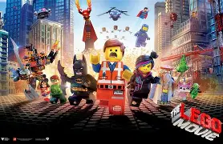
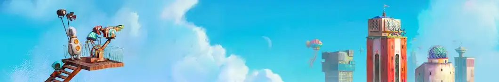
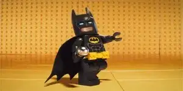
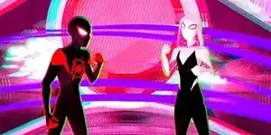
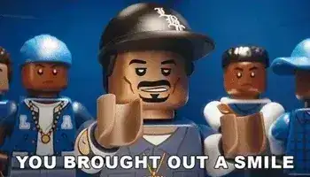

Vol.15 / Digital Materiality Special
LEGO(R) ザ・ムービー：
デジタルが模倣する「物質」の不完全性
2026.02.26 UP

◎ 制作スタジオ：Animal Logicによる「デジタルの職人芸」
本作を手掛けたのは、オーストラリアの Animal Logic。彼らは本作において「CGで何でもできる」という特権を自ら放棄しました。 特筆すべきは、映画に登場するすべての要素（炎、煙、水、爆発にいたるまで）が、既存のLEGOパーツの組み合わせだけで表現されている点です。これはVol.10のレオン＆コシーニャが「部屋にあるものだけで世界を再構築した」手法のデジタル版と言えるでしょう。

【Studio】Animal Logicが構築したデジタルのレゴ世界
◎ 技術：物理的制約の完全再現（バーチャル・ストップモーション）
本作の不気味なほどのリアリティは、以下の「不自由さ」の設計から生まれています。
- 🔹 1/1スケールのデジタルツイン： すべてのブロックは実在のパーツをスキャンしたデータに基づき、微細な「傷」「指紋」「プラスチックのパーティングライン（継ぎ目）」までシミュレートされています。
- 🔹 関節可動域の制限： キャラクターの肘や膝は曲がりません。手を洗う動作一つとっても、現実のレゴ人形ができる範囲の動きしか許されないという制約が、逆に独特のユーモアと実在感を生んでいます。
- 🔹 モーションブラー（ブレ）の排除： 通常のCGで使われる滑らかなブレをあえて使わず、ストップモーション特有の「カクつき」を計算してレンダリングしています。

【Technology】指紋や傷まで再現されたデジタルツイン
◎ 背景：マニュアル（秩序）と想像力（混沌）の対立
Vol.10が「教団の閉鎖性」をテーマにしたように、本作もまた「地下室」という閉鎖空間を巡る物語です。 「おしごと大王」が象徴する、接着剤（クレイグル）で世界を固定しようとする「大人の収集家＝完成された秩序」。それに対し、エメットたちが体現する、既存のルールを壊して新しい形を作る「子供の遊び＝絶え間ない変容」。 この二重構造が明かされる瞬間、本作は単なる販促映画を超え、表現の本質を問うメタ・フィロソフィーへと変貌します。

【Theme】秩序と混沌の対立構造
◎ 関連作：拡張される「レゴ・シネマティック・ユニバース」と表現の進化
レオン＆コシーニャが短編三部作で「閉ざされた部屋」のモチーフを深化させたように、本作のチームもまた、プラスチックの質感とメタ構造を軸に作品群を拡張しています。
『レゴバットマン ザ・ムービー』 (2017)

本作のスピンオフでありながら、バットマンという記号を「孤独なコレクター」のメタファーとして解体した傑作です。前作同様、全ての背景がデジタル上のレゴパーツで構築されており、DCコミックスの膨大なアーカイブを「ブロックの山」として再解釈しています。
『スパイダーマン：スパイダーバース』シリーズ (2018〜)

監督のフィル・ロード＆クリス・ミラーが製作・脚本を務めた、アニメーション表現の到達点です。『LEGOムービー』で培った「異なる質感の混在」や「コマ落ちによるストップモーション感」を、コミックのドット表現と融合。デジタルで「手描きと物質のハイブリッド」を生み出す手法を極限まで進化させています。
『Piece by Piece』 (2024)

ファレル・ウィリアムスの自伝を、全編レゴ・アニメーションで描くという実験作です。ドキュメンタリーという現実の素材を、あえて「ブロックという抽象」で再構成する手法は、Vol.10が歴史的悲劇を「壁画の変容」として描いたアプローチと通底するものがあります。

【Related】質感の継承：『スパイダーバース』で見せたデジタルの不完全美
◎ 深掘り：公式・紹介サイト
🔗 Animal Logic - 制作スタジオ公式サイト
LEGOパーツのデジタルツイン化や、物理シミュレーションの裏側を公開。
🔗 Warner Bros. - LEGO(R) ムービー公式
日本語版の作品詳細。続編やスピンオフの情報も網羅。
🔗 LEGO.com - Was THE LEGO MOVIE stop-motion?
100%レゴパーツで作られた世界の「ルール」についての公式解説。
🔍 Animeda! 視点：プラスチックの魂
Vol.10が「壁の塗り替え」という物理的破壊を通じて精神の崩壊を描いたのに対し、本作は「デジタルによる物質の完全模倣」を通じて、失われた手触りを取り戻そうとしています。 「完璧に美しいCG」ではなく「指紋がついたプラスチックの不完全さ」をあえて描くこと。そこには、効率化を極めた現代のデジタル制作に対する、Animal Logicからの皮肉と愛が込められています。